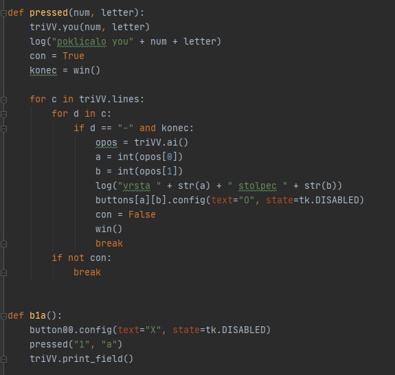

Kako deluje
- Gumb je pritisnjen, kar povzroči, da se izvede njegova funkcija, temu gumbu se spremeni znak, ter se ga izklopi,
- potem gumbova funkcija poklice funkcijo pressed, ter ji sporoci pozicijo gumba,
- pressed poklice funkcijo you iz druge datoteke, ki zapise podatek v svoj seznam. Funkcija you tudi preveri, ce je mesto prosto, ampak je sedaj to neuporabno, saj ne moremo klikniti na ze uporabljen gumb,
- z funkcijo win izvemo, ce se igra nadaljuje in ce se, se izvede zanka, ki pregleda, ce je se kaksno mesto prosto,
- ce je kaksno mesto prosto, se izvede funkcija ai iz druge datoteke, ki je tukaj boljse opisana,
- z informacijami, ki jih je funkcija ai vrnila, spremenimo znak, ter stanje gumba in koncamo zanko z se enim pregledom, ce se je igra koncala.
|

|